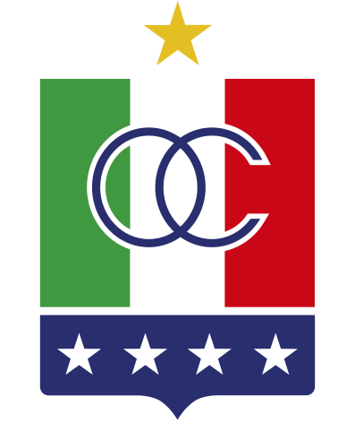
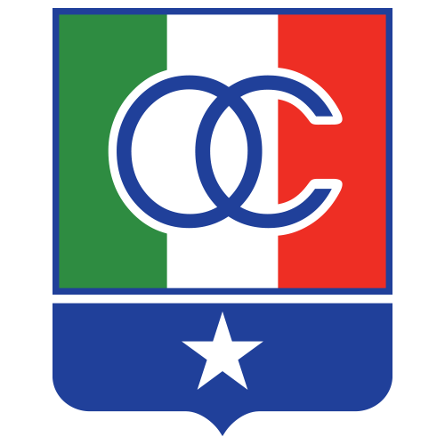

Once Caldas DAF
Historia del club

Once Caldas es un club de fútbol colombiano fundado el 16 de abril de 1948, conocido por su victoria en la Copa Libertadores de 2004 y su impacto en el fútbol colombiano.
En 1959, se fusionó con Once Deportivo y adoptó el nombre de Once Caldas. El club debutó oficialmente en la Dimayor en 1961. Ha ganado la Primera A en 1950, 2003, 2009 y 2010. El mayor logro fue conquistar la Copa Libertadores en 2004, venciendo a Boca Juniors en la final.
Bajo la dirección de entrenadores icónicos como Luis Fernando Montoya, el club alcanzó su apogeo en los años 2000. Su estilo de juego, basado en la solidez defensiva y el ataque rápido, se convirtió en un sello distintivo. Además, Once Caldas ha sido un pilar cultural en Manizales, representando el orgullo del Eje Cafetero.
Clásico Rival
El clásico rival de Once Caldas es el Deportivo Pereira, conocido como el Clásico del Eje Cafetero. Es uno de los encuentros más emocionantes del fútbol colombiano por su intensidad y rivalidad regional.
Esta rivalidad se remonta a décadas atrás, con partidos que han definido momentos clave en la historia de ambos clubes. Un encuentro memorable fue en 2003, cuando Once Caldas venció 3-2 en un partido vibrante que consolidó su dominio regional. Los enfrentamientos son conocidos por el ambiente apasionado en el Estadio Palogrande y el Hernán Ramírez Villegas.
Jugadores Históricos
- Sergio Galván Rey - Máximo goleador histórico del club, conocido por su olfato goleador y liderazgo.
- Dayro Moreno - Delantero letal que marcó una era con sus goles decisivos en torneos locales.
- Juan Carlos Henao - Arquero legendario, clave en la Libertadores 2004 con atajadas memorables.
- Arnulfo Valentierra - Mediocampista creativo que brilló en los títulos de 2003 y 2004.

Hinchada Oficial: Holocausto Norte
A finales de los 90s, el Once Caldas tuvo grandes campañas que impulsaron la creación de Holocausto Norte, su barra brava más representativa. Nació en 1998 con jóvenes apasionados que transformaron la tribuna norte del Estadio Palogrande en el corazón del aliento blanco. Hoy cuenta con más de 5000 miembros activos y ha sido parte esencial del ambiente en los partidos más importantes del club.
Holocausto Norte es conocida por sus cánticos vibrantes, banderas gigantes y coreografías que han acompañado al equipo en momentos históricos, como la final de la Libertadores 2004. Su lema, "Blanco de Corazón", refleja la pasión inquebrantable por el club.
La gran conquista de la Libertadores
La Copa Libertadores 2004 marcó el mayor hito en la historia de Once Caldas. Bajo la dirección de Luis Fernando Montoya, el equipo superó todas las expectativas, derrotando a gigantes sudamericanos. La final contra Boca Juniors, decidida en penales, consagró a Once Caldas como el segundo club colombiano en ganar el torneo.
La campaña incluyó victorias clave contra equipos como Vélez Sársfield y São Paulo, con un estilo de juego disciplinado y efectivo. Juan Carlos Henao y jugadores como Elkin Soto fueron fundamentales en esta gesta histórica.
| Fecha | Equipos | Localidad | Marcador |
|---|---|---|---|
| #1 | Once Caldas vs Fenix | Local | 3-0 |
| #2 | Maracaibo vs Once Caldas | Visitante | 1-2 |
| #3 | Vélez Sársfield vs Once Caldas | Visitante | 2-0 |
| #4 | Once Caldas vs Vélez Sársfield | Local | 2-0 |
| #5 | Once Caldas vs Maracaibo | Local | 2-1 |
| #6 | Fenix vs Once Caldas | Visitante | 2-2 |